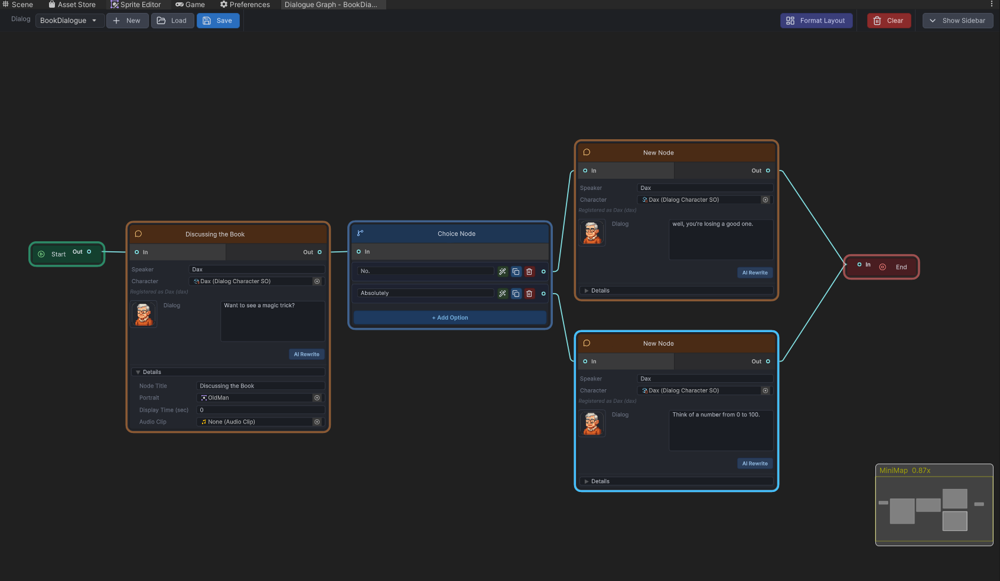

Quick Tutorial
This is the smallest meaningful workflow in the repository: create a graph, wire runtime components, and play a branching conversation end to end.
Step 1. Create or open a graph
Open Tools > Dialog System > Dialog Graph. In the launcher window, either create a new graph asset or open an existing graph such as DialogDemo.
Step 2. Build a minimal graph
- Keep the generated
StartandEndmarkers. - Add one
Dialognode for an opening line. - Add one
Choicenode with at least two answers. - Add one or two more
Dialognodes for the branch outcomes. - Connect everything so every branch reaches
End.
Start -> Dialog -> Choice -> Dialog A -> End
-> Dialog B -> EndStep 3. Save the graph
Use the graph editor toolbar to save. The graph is stored as a DialogGraph asset with sub-assets for the individual nodes.
Step 4. Wire runtime components
In your scene, add or reuse a DialogManager, assign its uiPanel, add your graph to dialogGraphs, and give the mapping a dialogID.
Step 5. Trigger playback
using DialogSystem.Runtime.Core;
using UnityEngine;
public class StartGuardConversation : MonoBehaviour
{
public void PlayIntro()
{
DialogManager.Instance.PlayDialogByID(
"intro_guard",
() => Debug.Log("Conversation finished."));
}
}Step 6. Try runtime behaviors
- dialog text appears in the runtime panel
- portraits and speaker names update
- choices can be selected by click or keyboard
- skip and autoplay work as expected
Step 7. Inspect history and transcript
string transcript = DialogManager.Instance.GetLastPlayedDialogTranscript("intro_guard");
Debug.Log(transcript);Branching graph example

Ideal visual for the authoring steps.
Runtime result

Shows the graph authoring result in Play Mode.